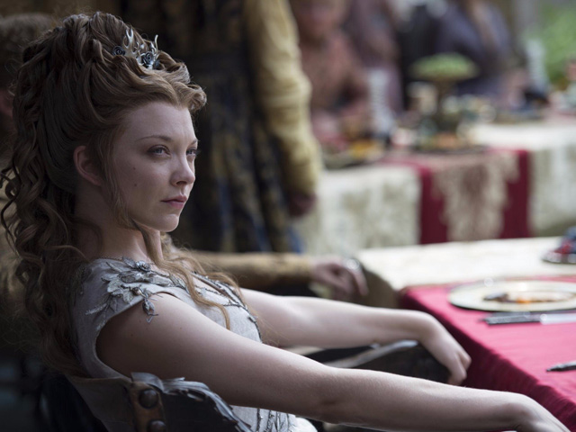
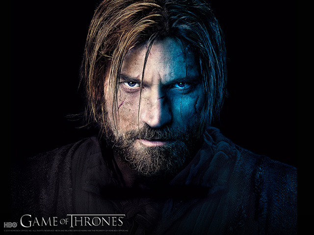

slick carousel
Cette page montre comment utiliser le plugin
slick pour
jQuery permettant de créer des carousels.
Notes :
- Je ne suis pas l'auteur des images.
- Il s'agit d'une exemple pour des étudiants.
Carousel simple
Carousel un peu plus compliqué

